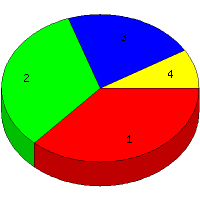

Week of 10/4/2009 to 10/10/2009: Top
4 of
4 File Types (Extensions)
Sorted by Access Count
Individual file types as determined by file extensions. All URLs that
do not contain an extension are counted as directories.

| Rank |
Type |
Accesses |
% |
Bytes |
% |
| 1 |
htm
|
39 |
36.79 |
108,777 |
5.79 |
| 2 |
Directory (folder)
|
35 |
33.02 |
89,250 |
4.75 |
| 3 |
jpg
|
23 |
21.70 |
1,570,304 |
83.56 |
| 4 |
gif
|
9 |
8.49 |
110,936 |
5.90 |